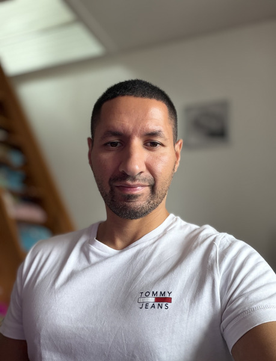

Titre Professionnel Développeur Web et Web Mobile
2025 - 2026Centre Européen de Formation (CEF)

Infirmier diplômé d'État, j'ai exercé dans différents secteurs d'activité. Durant la pandémie de Covid-19, j'ai réalisé des tests de dépistage et participé aux campagnes de vaccination. J'ai ensuite accompagné des populations migrantes en menant des entretiens de détection des vulnérabilités et d'évaluation des besoins. Afin d'élargir mes compétences, j'ai obtenu le titre professionnel de Développeur Web et Web Mobile.
Centre Européen de Formation (CEF)
IFSI Nancy-Laxou
IRFA-Nancy
Lycée Émile Zola
Entretiens médico-sociaux, évaluations, gestion de dossiers et traitement des demandes médicales.
Vaccination en centre et en équipes mobiles, interventions en maisons de soins.
Participation au Large Scale Testing et consultation au Centre de Consultation COVID de Kirchberg.
Soins infirmiers polyvalents en milieu hospitalier.